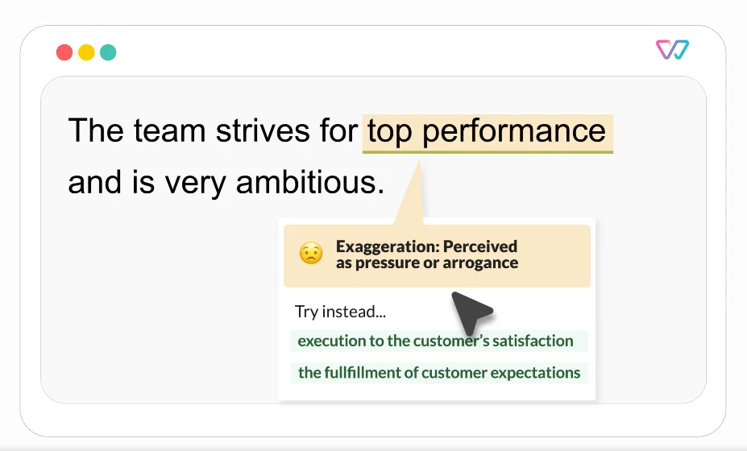

Published: 2023-03-01
Originally published at https://huggingface.co/blog/classification-use-cases
If you're interested in building ML solutions faster, visit the Expert Acceleration Program landing page and contact us here !
As IT continues to evolve and reshape our world, creating a more diverse and inclusive environment within the industry is imperative. Witty Works was built in 2018 to address this challenge. Starting as a consulting company advising organizations on becoming more diverse, Witty Works first helped them write job ads using inclusive language. To scale this effort, in 2019, they built a web app to assist users in writing inclusive job ads in English, French and German. They enlarged the scope rapidly with a writing assistant working as a browser extension that automatically fixes and explains potential bias in emails, Linkedin posts, job ads, etc. The aim was to offer a solution for internal and external communication that fosters a cultural change by providing micro-learning bites that explain the underlying bias of highlighted words and phrases.

Example of suggestions by the writing assistant
Witty Works first chose a basic machine learning approach to build their assistant from scratch. Using transfer learning with pre-trained spaCy models, the assistant was able to:
By detecting and filtering words according to a specific knowledge base using linguistic features, the assistant could highlight non-inclusive words and suggest alternatives in real-time.
The vocabulary had around 2300 non-inclusive words and idioms in German and English correspondingly. And the above described basic approach worked well for 85% of the vocabulary but failed for context-dependent words. Therefore the task was to build a context-dependent classifier of non-inclusive words. Such a challenge (understanding the context rather than recognizing linguistic features) led to using Hugging Face transformers.
Example of context dependent non-inclusive words:
Fossil fuels are not renewable resources. Vs He is an old fossil
You will have a flexible schedule. Vs You should keep your schedule flexible.
The initial chosen approach was vanilla transformers (used to extract token embeddings of specific non-inclusive words). The Hugging Face Expert recommended switching from contextualized word embeddings to contextualized sentence embeddings. In this approach, the representation of each word in a sentence depends on its surrounding context.
Hugging Face Experts suggested the use of a Sentence Transformers architecture. This architecture generates embeddings for sentences as a whole. The distance between semantically similar sentences is minimized and maximized for distant sentences.
In this approach, Sentence Transformers use Siamese networks and triplet network structures to modify the pre-trained transformer models to generate “semantically meaningful” sentence embeddings.
The resulting sentence embedding serves as input for a classical classifier based on KNN or logistic regression to build a context-dependent classifier of non-inclusive words.
Elena Nazarenko, Lead Data Scientist at Witty Works:
“We generate contextualized embedding vectors for every word depending on its
sentence (BERT embedding). Then, we keep only the embedding for the “problem”
word’s token, and calculate the smallest angle (cosine similarity)”
To fine-tune a vanilla transformers-based classifier, such as a simple BERT model, Witty Works would have needed a substantial amount of annotated data. Hundreds of samples for each category of flagged words would have been necessary. However, such an annotation process would have been costly and time-consuming, which Witty Works couldn’t afford.
The Hugging Face Expert suggested using the Sentence Transformers Fine-tuning library (aka SetFit ), an efficient framework for few-shot fine-tuning of Sentence Transformers models. Combining contrastive learning and semantic sentence similarity, SetFit achieves high accuracy on text classification tasks with very little labeled data.
Julien Simon, Chief Evangelist at Hugging Face:
“SetFit for text classification tasks is a great tool to add to the ML toolbox”
The Witty Works team found the performance was adequate with as little as 15-20 labeled sentences per specific word.
Elena Nazarenko, Lead Data Scientist at Witty Works:
“At the end of the day, we saved time and money by not creating this large data set”
Reducing the number of sentences was essential to ensure that model training remained fast and that running the model was efficient. However, it was also necessary for another reason: Witty explicitly takes a highly supervised/rule-based approach to actively manage bias . Reducing the number of sentences is very important to reduce the effort in manually reviewing the training sentences.
One major challenge for Witty Works was deploying a model with low latency. No one expects to wait 3 minutes to get suggestions to improve one’s text! Both Hugging Face and Witty Works experimented with a few sentence transformers models and settled for mpnet-base-v2 combined with logistic regression and KNN.
After a first test on Google Colab, the Hugging Face experts guided Witty Works on deploying the model on Azure. No optimization was necessary as the model was fast enough.
Elena Nazarenko, Lead Data Scientist at Witty Works:
“Working with Hugging Face saved us a lot of time and money.
One can feel lost when implementing complex text classification use cases.
As it is one of the most popular tasks, there are a lot of models on the Hub.
The Hugging Face experts guided me through the massive amount of transformer-based
models to choose the best possible approach.
Plus, I felt very well supported during the model deployment”
The number of training sentences dropped from 100-200 per word to 15-20 per word. Witty Works achieved an accuracy of 0.92 and successfully deployed a custom model on Azure with minimal DevOps effort!
Lukas Kahwe Smith CTO & Co-founder of Witty Works:
“Working on an IT project by oneself can be challenging and even if
the EAP is a significant investment for a startup, it is the cheaper
and most meaningful way to get a sparring partner“
With the guidance of the Hugging Face experts, Witty Works saved time and money by implementing a new ML workflow in the Hugging Face way.
Julien Simon, Chief Evangelist at Hugging Face:
“The Hugging way to build workflows:
find open-source pre-trained models,
evaluate them right away,
see what works, see what does not.
By iterating, you start learning things immediately”
🤗 If you or your team are interested in accelerating your ML roadmap with Hugging Face Experts, please visit hf.co/support to learn more.
Julien Simon is the Chief Evangelist at Hugging Face , where he focuses on democratizing AI and making transformers accessible to everyone. A leading voice in open-source AI and small language models, he helps developers and enterprises bring their AI ideas to life. In his spare time, he reads the works of JRR Tolkien again and again.